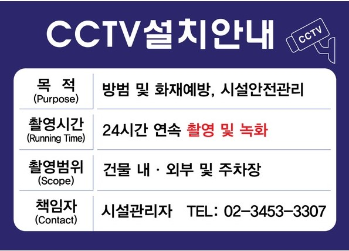

생생보안정보통
생생보안정보통개인정보란?
"개인정보"란 살아 있는 개인에 관한 정보로서 성명, 주민등록번호 및 영상 등을 통하여 개인을 알아볼 수 있는 정보(해당 정보만으로는 특정 개인을 알아볼 수 없더라도 다른 정보와 쉽게 결합하여 알아볼 수 있는 것을 포함한다)를 말한다. (개인정보보호법 2조)
개인정보보호 관리 4단계
| 개인정보 수집·이용 | 개인정보 제공·위탁 |
|---|---|
|
|
| 개인정보 파기 | 개인정보 저장·처리 |
|
|
개인정보보호법 Q&A
Q. 사망한 사람의 회원탈퇴를 유가족이 대리하여 요청할 수 있는가?
A. 정보주체 본인이 사망한 경우는 유가족이 회원의 사망확인서, 가족관계등록부 등을 구비하여 탈퇴를 신청할 수 있다.
개인정보보호법에 따른 개인정보는 현재 생존하고 있는 개인에 관한 정보에 한한다. 그러나 사망자의 정보가 사망자와 유족과의 관계를 나타내는 정보이거나 유족 등의 사생활을 침해하는 등의 경우에는 사망자 정보인 동시에 관계되는 유족의 정보이기도 하므로 이 법의 적용대상이 될 수 있다.
Q. 영상정보처리기기(CCTV)의 설치 규정이 있는가?
A. 영상정보 처리기기는 공개된 장소에 특정 목적(범죄예방 및 수사, 시설안전 및 화재예방 등)으로만 설치·운영이 가능하다.
영상정보처리기기의 설치·운영 제한
- 영상정보 처리기기는 공개된 장소에 특정 목적으로만 설치 운영
- 설치목적과 다른 목적으로 임의 조작, 녹음기능 사용 금지
- 안내판 설치
- 정보주체가 쉽게 인식할 수 있도록 안내판 설치(기재사항:설치 목적 및 장소, 촬영범위 및 시간, 관리책임자 및 연락처)
- 건물 안에 다수의 영상정보 처리기기 설치 시, 출입구 등 잘 보이는 곳에 해당 시설 전체가 설치지역임을 표시하는 안내판 설치
- 처벌 규정
- 3년 이하 징역 또는 3천만원 이하 벌금
- 안내판 설치 위반 시, 1천만원 이하의 과태료

개인정보보호 영상
<- 다 읽었으면